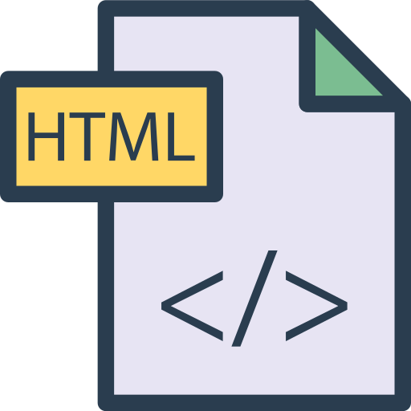

About me
Po 4 latach pracy w finansach postanowiłam przebranżowić się na programistkę, z czym miałam kontakt w trakcie studiów magisterskich - programowanie w SAS, R i VBA, praca z danymi statystycznymi. Obecnie kształcę się w kierunku front-end development a w przyszłości chciałabym rozwinąć się na full-stack development.
Education
| 2015-2017 | Warsaw School of Economics, Master Degree, Quantitative Methods and Information Systems |
| 2011-2014 | Warsaw School of Economics, studia licencjackie, Finance and Accounting |
| 2008-2011 | XXXIII LO im. Mikołaja Kopernika w Warszawie, International Baccalaureate (IB) programme |

Languages
English - advanced
French - basic
Contact data
| +48 518 552 460 | |
| dyrka.monika@gmail.com | Warsaw |
Programming languages and tools
- HTML - basics
- CSS - basics
- Java Script - rozpoczęta nauka
- GIT - podstawowa umiejętność obsługi
Projects
link do CV
Doświadczenie zawodowe
3/2018 - 11/2019 Ernst&Young Audyt Polska Sp. z o.o. sp. k. Konsultant-Dział Audytu Instytucji Finansowych
Praca z programem Excel i wewnętrznym programem do dokumentowania projektu - Canvas
9/2017 - 2/2018 KPMG Usługi Księgowe Sp. z o.o. Młodsza Księgowa
Praca z systemami księgowymi Symfonia Finanse i Księgowość oraz Microsoft Navision
8/2015 - 8/2017 Pramex International Sp. z o.o. Księgowa
Praca z systemami finansowo-księgowymi: Symfonia Finanse i Księgowość, Symfonia Kadry i Płace, Płatnik. Współpraca nad wdrażaniem rozwiązań do automatyzacji pracy.